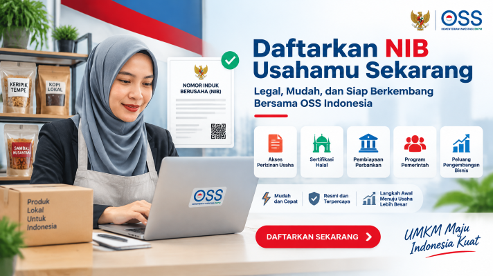
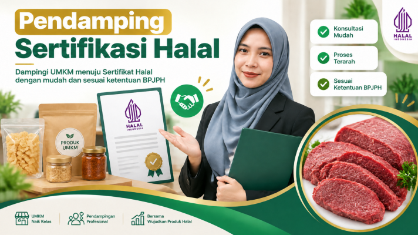
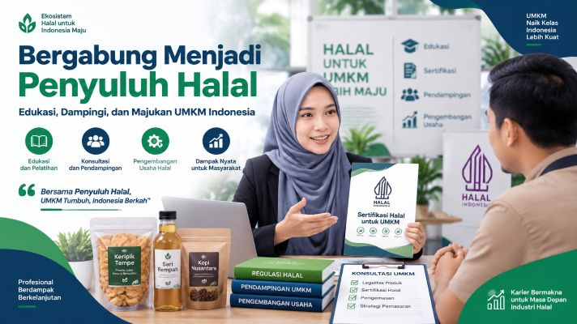
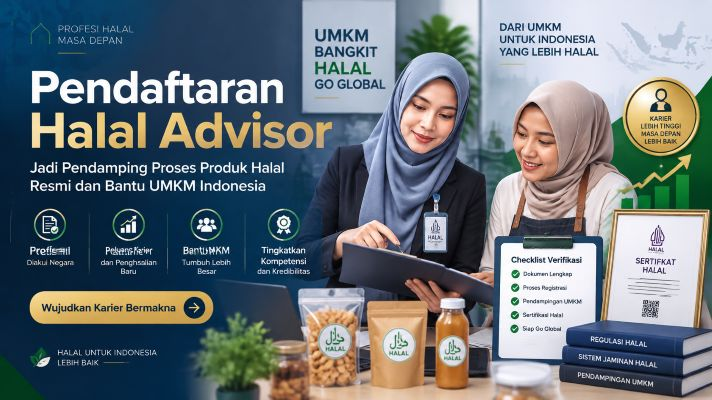
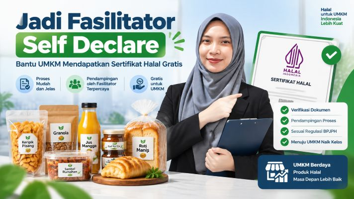

Bersama Membangun UMKM agar Naik Kelas
Kami hadir untuk mendampingi UMKM Banjarnegara agar lebih mandiri, inovatif, dan siap bersaing di era digital melalui berbagai program pengembangan usaha.
Perjalanan Kami✅ Program & Layanan Pendampingan UMKM 👇

Daftarkan NIB Usahamu Sekarang
Nomor Induk Berusaha (NIB) merupakan identitas resmi yang wajib dimiliki pelaku usaha untuk menjalankan bisnis secara legal. Dengan memiliki NIB, usaha Anda lebih mudah mengakses sertifikasi halal, perizinan, pembiayaan perbankan, serta berbagai program pemerintah untuk pengembangan UMKM.

Pelatihan Profesi Pendamping Sertifikasi Halal
Pelatihan Profesi Pendamping Proses Produk Halal (P3H) hadir untuk membekali peserta dengan pengetahuan dan keterampilan dalam mendampingi UMKM memperoleh sertifikasi halal. Melalui pelatihan ini, peserta akan memahami regulasi halal, mekanisme sertifikasi, serta praktik pendampingan yang sesuai dengan ketentuan BPJPH. Bergabunglah bersama para calon pendamping halal dan ambil peran dalam mendukung pengembangan ekosistem halal yang kuat dan berkelanjutan di Indonesia.

Pelatihan Profesi Penyuluh Halal
Penyuluh Halal memiliki peran penting dalam memberikan edukasi dan meningkatkan pemahaman masyarakat mengenai pentingnya produk halal dalam kehidupan sehari-hari. Melalui kegiatan penyuluhan, peserta akan dibekali wawasan tentang regulasi halal, gaya hidup halal, serta penerapannya bagi pelaku UMKM dan konsumen. Bergabunglah menjadi Penyuluh Halal untuk berkontribusi dalam memperkuat literasi dan ekosistem halal yang inklusif, berkelanjutan, dan bermanfaat bagi masyarakat luas.

Jadilah Halal Advisor Profesional
Halal Advisor berperan sebagai mitra strategis bagi UMKM dalam memahami, mempersiapkan, dan mengoptimalkan proses sertifikasi halal sesuai regulasi yang berlaku. Melalui pelatihan dan pembekalan yang terstruktur, peserta akan menguasai aspek manajemen halal, kepatuhan regulasi, serta pendampingan usaha yang berorientasi pada pengembangan bisnis. Bergabunglah sebagai Halal Advisor untuk membangun karier profesional sekaligus mendukung pertumbuhan ekosistem industri halal yang kompetitif dan berkelanjutan.

Mari Bergabung bersama Fasilitator Self Declare
Fasilitator Self Declare berperan membantu pelaku UMKM memperoleh sertifikat halal melalui skema Self Declare yang lebih sederhana, cepat, dan terjangkau. Melalui pembekalan yang komprehensif, peserta akan memahami proses pendampingan, verifikasi data usaha, serta persyaratan sertifikasi halal sesuai ketentuan yang berlaku. Bergabunglah sebagai Fasilitator Self Declare untuk mendukung percepatan sertifikasi halal UMKM dan memperkuat ekosistem produk halal Indonesia.